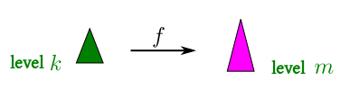
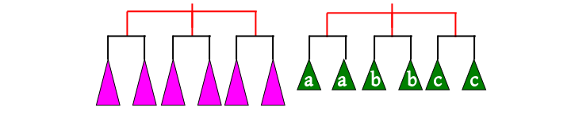
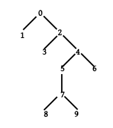

[Home]
Table of contents
In the last page we learned about some nice things to expect from
J. Now, nothing comes without a price. A language needs to
restrict the freedom of a programmer in various ways to make the
good things possible. The astute reader may have already
discerned that the idea of applying a function to specific level
of a tree is meaningful only if the tree is balanced (i.e., the
number of children of a node equals the number of chidren for its
siblings. This is the first restriction J puts. To ensure this
restriction for the outcome of application of a function we need
yet another restriction: the output shape of a function must depend on
only the input shape (and not on the input values).
|  |
| The shape of the green triangle
determines the
shape of purple triangle |
Here is the next one: a function can have
either one or two arguments. In operation parlance, these are
called unary and binary operators. But J call them,
respectively, monads and dyads. We have
already learned about how monads behave. Dyads add a second level
of complication.
Recall that a single application of $f$ to $x$ may
involve implicit loops to be launched causing multiple
invocations. For example, if $x$ is a 1-dimensional array of
length 10, then $sin(x)$ is a single application, but
actually consists of 10 invocations. The specified rank
determines how an application is split up into invocations.
The situation is similar for dyads. We have two ranks, one for
each argument. So the two trees may be split up like these:
Notice that the top parts (i.e. the frames) of the two trees are different. So we
cannot proceed to combine the gren and purple parts with $f$
immediately. However,
the frame of the second tree starts out like that the first
tree (i.e., the red parts are the same). So the second tree may
"sprout" to match the shape of the first:
|  |
| Each leaf node "sprouts" by replicating |
Now we may apply $f.$ If a purple tree and a green tree are
combined by $f$ into a blue tree:
then the final result will be:
Since functions are either monads or dyads, so they are much like
unary and binary operations that we learn in school. Indeed, J
uses exactly the same syntax. Thus, instead of
writing $f(x,y)$ we write x f
y. Similarly, $f(x)$ is f x. In
arithmetic, we have two types of minuses, unary and binary, much
to the confusion of kids. J
keeps up the tradition (both of arithmetic and of confusion) by allowing a same symbol to denote a
monad as well as dyad. Usually, the monad and the dyad denoted by
the same symbol are related, though this is not a requirement.
With all functions being written as binary and unary operators,
it is no waonder that J has large number of these. So to keep the
order of evaluation unambiguous we need to either put lots of
parentheses or we need to have some convention like precedence
and associativity. Even with as few operations as just +, -, *
and /, untrained kids find it difficult to remember rules of
precedence. You can imagine
how much more confusing it is going to be with many more
operators. Well, J has solved the problem by doing away with
precedence altogether (and thus confusing trained adults). The J dictum is "always proceed from right
to left". Before you and wonder about why we should proceed in
this "reverse" way, and suspect some Arabic influence,
let me point out that this is how we do it in math most of the
time: $(f\circ g)(x) = f(g(x))$ means apply $g$ first,
and then $f.$
J justly prides itself on smart ways of combining existing
operation to produce new ones. This is much like the way modern
man writes numbers as opposed to ancient Romans. Ancient Romans
assigned symbols more or less arbitrily to whatever number they
needed, like I, V, X and C. But modern man has a systematic
approach using a radix and expressing everything by combining
powers of 10. If you want to express a hundred, the ancient Roman
just used a letter C, while modern man would first express the
number as square of 10, and notice that it is
1$\times 10^2+$ 0$ \times 10^1 + $0$\times 10^0.$
The ancient Roman must have thought us crazy that we need so much
math to just express a number. But of course we know the
advantage. However, even we would be driven crazy if we have to
write the above expression in full everyime we need to express
a hundred. So we need an abbreviation: we have (arbitrary)
symbols for all the possible coefficients (0,1,2,...,9) and then
simply list the coefficients side by side. Is it really simple?
Yes, when you see that even a kid can do it. No, when we remember
that it took centuries for this system to evolve.
Well, that is basically what happens for J also. J has a clever way of
expressing many things by combining some basic objects. Arbitrary
names of assigned to only the basic entities, and all other
derived entities are expressed in their terms. Without
abbreviations, however, this would not be of much practical
value. So J uses very short names for its basic functions (at
most two characters).
We have learned about forks and compositions in the last page. These are
ways to combine existing functions to create new functions. At
first glance they may appear to be merely some convenient
shortcuts. But actually they play an important role in J. We
shall discuss this now.
Here
is a quick reminder for the monadic case (y denotes the argument):
- If
r is the fork r=:f g h then r y means:
- If
s is the composition s=:f @ g then s
y means:
The power of these abbreviations comes from the fact that
since all J functions are either mondas or dyads, hence the inner
nodes of any
syntax trees must have degree either 1 or 2:
|  |
| 0, 2, 4, 7 are dyads, rest are monads |
So the tree may be
constructed by just piecing together forks and
compositions. For each dyad, we need a fork, and for each monad a
composition. For the example shown above we have (using the
right-to-left compuation order of J):
1 0 3 2 5@(8 7 9) 4 6
It might look like magic. It is! But just like all magics in real
life, there is a way to practice them. The tree technique is one
such.
This example, however, represents the situation where
all the leaf nodes
correspond to monads, e.g., in $\sin y + \cos y$ the leaf
nodes are $\sin$ and $\cos$, both monads.
Now, that may not always be the case, because
- a leaf node may be just some constant, as
in $5 + \sin y$ the leaf node for 5 is holding a constant.
- A leaf node may be $y$ itself, as in $y -\sin y.$
J provides convenient
techniques to cover these in the case where the troublesome leaf
node is the left child of its parent:
-
If the leaf node contains a
constant, then just write it, and J will accept it as a constant
function. For example,
(5+sin) is a valid fork.
-
In the second case, where the a leaf node contains $y$,
there are two possible solutions. You may imagine $y$
as $id(y)$ where $id$ is the identity function. For
instance, $y-\sin y$ becomes $id(y)-\sin y,$ which
is a fork. This works irrespective of whether the $y$ occurs
in the left or the right child. However, if it occurs in the left
child, then there is a shortcut: just omit the $y$, and
J will understand. With this, $y-\sin y$ becomes
(-sin). Such lop-sided forks are
called hooks in J.
In the above solutions, J shows a bias in favor of the left child.
This may bother you. If the parent is a commutative operation, then
the children may be swapped (e.g., $\sin(y) + 3$ may be written as
$3+ \sin(y)$), but what if it is not? Don't worry. J has got
you covered there too! J can swap
the children of any dyad by using a ~. Thus, 4 -~ 5
is the same as 5 - 4. If you want to
express $\sin(y)-5$ using a fork, then sin - 5 won't
work, but 5-~sin will. Similarly, $\sin(y)-y$ may be
abbreviated to the hook -~sin.
This discussion was about the monadic behaviour of forks. Similar
ideas hold for dyads as well.
- If
r is the fork r=:f g h then x r y means:
- If
s is the composition s=:f @ g then x s y means:
As in the monadic case, any syntax tree may be built out of
these. If the leaf nodes are all dyadic, and expect the same
arguments, then everything is fine. However, that need not always
be the case. Some of them may be monadic, or need a constant
argument, or only $x$ or only $y.$ These are tackled
as follows.
- J provides two convenience functions
]
and [. Used as dyads, they return, respectively, the
right and left arguments.
- Any constant leaf node may be handled as in the monadic
case, as long as it is the left child.
- We can use a hook here as well. The hook
h=: f g when
used dyadically as x h y will mean:
It is possible to build any syntax tree of dyads and monads using
forks (hooks) and compositions. This is an example of what is called tacit
programming in J: creating new functions by combining
existing functions via operators without explicitly mentioning
the arguments.
A powerful feature of J as it is, one must not go overboard with
it.
Creating a huge syntax tree by repeated
use of forks (hooks) and compositions is not desirable from
the viewpoint of
readability. But tacit programming helps a lot for
smaller trees.